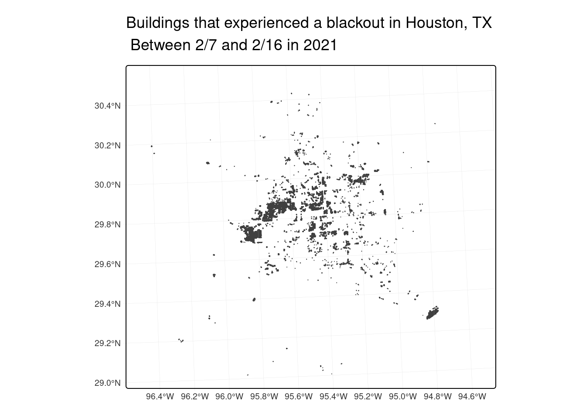
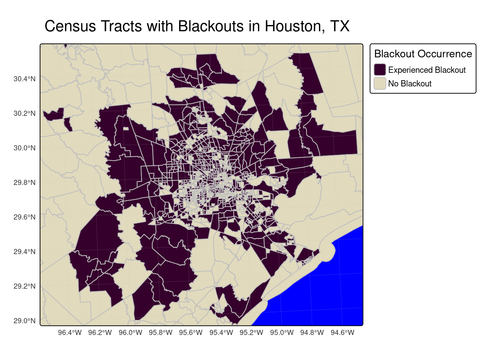
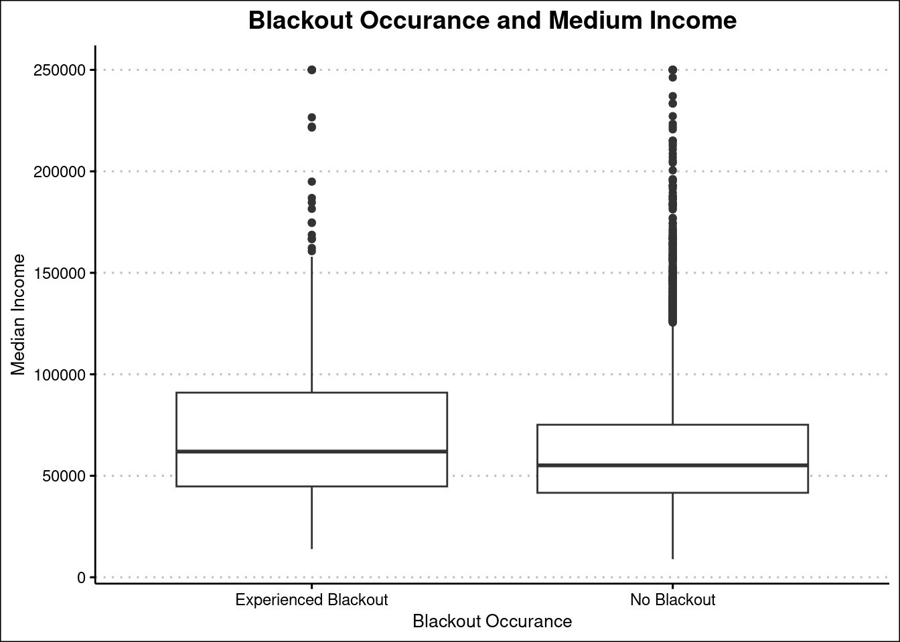

pacman::p_load('tidyverse',
'sf',
'here',
'janitor',
'tmap',
'kableExtra',
'patchwork',
'ggthemes',
'colorRamps',
'stars',
'terra')Extreme weather events

In this project we will examine environmental effects of Texas storms by:
Finding the areas with blackouts using night lights data
Finding which homes experienced a power outage
Finding which census tracts experienced blackouts
Finding the median income of those who experienced a blackout
I’m going to start by loading in the necessary packages
In this project I am working with multiple datasets that may have different crs’s. I am going to be using functions to check and manually transform the crs’s of the datasets
Create two functions
# Function to check and align CRS of two sf objects
check_crs <- function(data1, data2) {
if (st_crs(data1) == st_crs(data2)) {
message("CRSs match!")
return(data1) # return the original object
} else {
warning("CRSs do not match. Transforming target to match reference...")
data2 <- st_transform(data1, st_crs(data2))
return((data2))
}
}
# This function compares the crs's of two datasets - good for checking before plotting to avoid crashes
# Function to check if we are working with espg 3083
check_3083 <- function(data) {
if (st_crs(data)$epsg == 3083) {
message("CRS ok")
return(data) # return the original object
} else {
warning("CRS does not conform, transforming now")
data_transformed <- st_transform(data, st_crs(3083))
return(data_transformed)
}
}
# This function checks if a specific sf is in ESPG 3083 which is the Texas Centric Albers Equal AreaData import
Light data
Each day has 2 .tif files
lights_07_1 <- read_stars(here::here('data', 'VNP46A1', 'VNP46A1.A2021038.h08v05.001.2021039064328.tif'))
lights_07_2 <- read_stars(here::here('data', 'VNP46A1', 'VNP46A1.A2021038.h08v06.001.2021039064329.tif'))
lights_16_1 <- read_stars(here::here('data', 'VNP46A1', 'VNP46A1.A2021047.h08v05.001.2021048091106.tif'))
lights_16_2 <- read_stars(here::here('data', 'VNP46A1', 'VNP46A1.A2021047.h08v06.001.2021048091105.tif'))Buildings
The buildings need a query to select all the building types including null buildings
buildings <- st_read(here::here('data', 'gis_osm_buildings_a_free_1.gpkg'),
query = "
SELECT * FROM gis_osm_buildings_a_free_1
WHERE (type IS NULL AND name IS NULL)
OR type IN ('residential', 'apartments', 'house', 'static_caravan', 'detached')",
quiet = TRUE)Road data
This query acts to select the motorways from the road layer
roads <- st_read(here::here('data', 'gis_osm_roads_free_1.gpkg'),
query = "SELECT * FROM gis_osm_roads_free_1 WHERE fclass='motorway'",
quiet = TRUE)Socioeconomic layers
Lastly, we will want to look at the census tracts and median income
income <- st_read(here::here('data', 'ACS_2019_5YR_TRACT_48_TEXAS.gdb'),
layer = 'X19_INCOME', quiet = TRUE) %>%
select(c('GEOID',
'B19013e1',
'B19013m1')) # B19013e1 and B19013m1 are the median income
census <- st_read(here::here('data', 'ACS_2019_5YR_TRACT_48_TEXAS.gdb'),
layer = 'ACS_2019_5YR_TRACT_48_TEXAS',
quiet = TRUE) # And the whole census dataAnalysis
To start this analysis we need to mosaic the two files (overlapping boundaries), then check the crs. I need to make sure that all my data are cropped to be in the Houston area so that I don’t crash my computer.
Mosaiac the two days
lights_7 <- st_mosaic(lights_07_1, lights_07_2) # Mosaiac our two days, essentially like putting puzzle pieces together that have overlapping borders
lights_16 <- st_mosaic(lights_16_1, lights_16_2)
# Call in my two bbox for houston
houston_bbox_sf <- st_bbox(c(xmin = -96.5, xmax = -94.5,
ymin = 29, ymax = 30.5), crs = "EPSG:4326")
# And crop my rasters using terra::crop
lights_7_cropped <- st_crop(lights_7, houston_bbox_sf)
lights_16_cropped <- st_crop(lights_16, houston_bbox_sf)Next I am going to make a set of maps comparing night light intensities before and after the two storms
# For the initial plots of light difference I am going to exclude lower and upper values to show contrast
lights_16_cropped[lights_16_cropped< 200| lights_16_cropped> 1000] <- NA
lights_7_cropped[lights_7_cropped < 200 | lights_7_cropped > 1000] <- NA
lights_complete <- c(lights_7_cropped,lights_16_cropped) # Then stack the two lights
tm_shape(lights_complete) + # Base shape
tm_raster(col.scale = tm_scale(values = "blues"), # Raster of the lights
col.legend = tm_legend(title = "Light Intensity\n(nW cm²sr¹)", # Legend title
title.size = 1, # Legend title size
text.size = 0.7)) + # Legend text size
tm_facets(ncol = 2, # Make a plot of both days
free.scales = FALSE) + # This is deprecated but is the only way I've found to have one legend
tm_title("Houston Night Lights: Before and After Feb 2021 Storm",
size = 1.5) + # Title and size
tm_layout(legend.outside = TRUE, # Put legend on the outside
panel.labels = c("February 7, 2021 (Before)",
"February 16, 2021 (After)"),
bg.color = 'black') +
tm_graticules(lwd = 0.2, # Small graticules
col = "grey",
alpha = 0.5)
Now we are going to use the change in the lights to see which areas and buildings had a blackout
houston_change <- lights_7 - lights_16 # Find the difference between the two days
houston_change[houston_change< 200] <- NA # Make anything with a difference of under 200 NA
houston_blackout <- st_crop(houston_change, houston_bbox_sf) # Crop to houston bbox
blackout_mask <- houston_blackout %>% # Make it polygons and validate st
st_as_sf() %>%
st_make_valid()
blackout_mask <-check_3083(blackout_mask) # Make sure we are in 3083Now lets buffer around the roads
Roads
# Join Roads
roads_union <- st_union(roads) # Unify geometry
roads_buffer <- st_buffer(roads_union, 200) # Make a 200m buffer
# Double check they are both in the right crs
roads_buffer <- check_3083(roads_buffer)
blackout_mask <-check_3083(blackout_mask)
# And add buffered roads to the blackout mask
blackout_final_roads <- st_difference(blackout_mask, roads_buffer)Add buildings to blackout mask
# Now we need to add some buildings buildings
# First check that buildings is in the right crs
buildings <- check_3083(buildings)
# Then find the intersection
blackout_buildings <- st_intersection(buildings, blackout_final_roads)
# And just in case some weirdness happened, check again
blackout_buildings <- check_3083(blackout_buildings)Map houses in houston that lost power
Now we can finally make a map of the houses that lost power
tm_shape(blackout_buildings, bbox = houston_bbox_sf)+
tm_polygons()+
tm_title("Buildings that experienced a blackout in Houston, TX \n Between 2/7 and 2/16 in 2021",
padding = 0) +
tm_graticules(lwd = 0.2, # Small graticules
col = "grey",
alpha = 0.5)
Since houses below 200 nW cm-2sr-1 change were assigned NA we now have an idea of how many buildings lost power.
Code
print(paste0(nrow(blackout_buildings),
' buildings experienced a blackout'))[1] "122218 buildings experienced a blackout"Soceoeconomic analysis
We are going to examine census tracts in which buildings experienced a blackout
First lets join the two
# To do this i need to change the name of a column in income
colnames(income)[1] = 'GEOID_Data'
layer_join <- left_join(census,income, by = 'GEOID_Data')
# Clean column names
layer_join <- layer_join %>%
clean_names()
# Check crs's
layer_join <- check_3083(layer_join)
blackout_buildings <- check_3083(blackout_buildings)
# Join census data
blackout_layers <- st_join(blackout_buildings, layer_join, join = st_within)
# Now I can compare the two and make a map showing the comparison
layer_join$blackout <- factor(layer_join$namelsad %in% unique(blackout_layers$namelsad),
levels = c(TRUE, FALSE)) # Here I make a new column with trye or false values, based on whether the census tract experienced a blackout
blackout_tract <- layer_join %>%
select(namelsad, blackout, b19013e1) # Make a mapping dfNow we can make a census tract plot
tm_shape(blackout_tract, bbox = houston_bbox_sf) +
tm_polygons(
fill = "blackout", # Fills based on whether a blackout happened in a census tract
fill.scale = tm_scale_discrete(
values = c("TRUE" = "#35012C", # dark purple for blackout
"FALSE" = "#E1DABD"), # light beige for no blackout
),
fill.legend = tm_legend(title = "Blackout Occurrence",
labels = c("TRUE" = "Experienced Blackout", # light beige for blackout
"FALSE" = "No Blackout")),
col = "grey"
) +
tm_title("Census Tracts with Blackouts in Houston, TX") +
tm_layout(bg.color = 'blue')+
tm_graticules(lwd = 0.2, # Small graticules
col = "grey",
alpha = 0.5)
Lastly we make a boxplot of blackout occurance and census tract
ggplot(blackout_tract, aes(x = blackout, y = b19013e1))+
geom_boxplot()+
ggthemes::theme_clean()+ # Favorite theme
labs(x = 'Blackout Occurance', # Rename axes
y = 'Median Income',
title = 'Blackout Occurance and Medium Income')+
theme(plot.title = element_text(hjust = 0.5))+
scale_x_discrete(labels = c("TRUE" = "Experienced Blackout", # light beige for blackout
"FALSE" = "No Blackout"))
Our analysis had a major limitation in the time frame that is available due to satellite conditions. The storms took place between February 10th–11th, 13th–17th, and 15th–20th, however due to weather conditions, the best time to compare the lights was the 7th and 16th. This fails to account for buildings that lost and then regained power, as well as buildings that lost power after the 16th. Furthermore, for the grouping by census tract we considered any census tract as a blackout tract if it even had only one building in a blackout. This may have skewed the outcomes of the box plot.